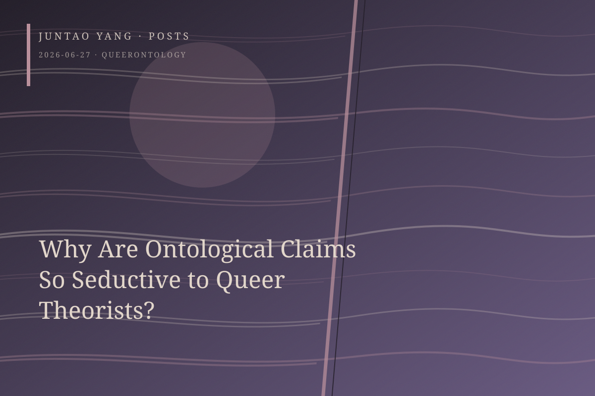

<content>
The alliance between queer theory and queer activism is less secure than we often imagine. When activism articulates its emancipatory agenda—that homosexual existence is an arbitrary sexual preference, a historically constructed category of identity, and one erotic pattern among many—it also poses a question to theory: on what grounds does queerness demand special theoretical attention? Why is it not simply one branch of a sociology of difference?
An ontological claim attempts to answer this question. Once a theorist establishes that queer desire discloses some essence or truth about sexual being, subjectivity, or being itself, queer theory ceases to be a local inquiry and ascends to the status of first philosophy. From Bersani to Edelman, from Butler to Halberstam, the subjects of their work or the trajectories of their academic careers ultimately display a common structure: a universal truth is derived from a marginal position. Ironically, this discursive posture is markedly conservative. Queer theory, in its most canonical formulations, claims to dismantle identity, essence, and nature. Yet when queer theorists proclaim an ontological disclosure specific to queerness, they perform precisely an essentialist slippage.
The awkwardness of queer theory’s relation to Marxism lies partly here. Marxism, too, makes ontological claims about labor, alienation, history, and species-being, but in principle it proceeds from a condition held in common: all laboring subjects participate in the macrohistory through which capital accumulates itself and ultimately generates crisis. Queer theory is exceptionalist. It often implies that only a particular experience or sexual position affords access to truth.
The temptation of ontology is difficult to resist because queer theorists must make themselves appear more intellectually profound than queer activists or actors pursuing an ordinary queer political agenda. If homosexual existence reveals no truth about being, why should a scholar spend two decades studying it rather than the experience of any other oppressed group? Why, for that matter, should the academy sustain this form of intellectual existence?
The desire for importance stands in unresolved tension with a declared investment in antifoundationalism. Where might an exit lie? If there is one, perhaps the only honest position is to acknowledge that queer theory’s value does not consist in ontological discovery. This requires more than an oblique implication or a camp pose: the slippage should be stopped explicitly, in the introduction. Theory’s scope would then become narrower, restricted to small segments of a field, a limited set of sexual lives and experiences, and situated analyses of discourse. Such work may appear less seductive. Yet does ambition itself confer any benefit, or is it merely one more residue of phallocentrism?
This problem extends beyond queer theory. Scholars of postmodern theory are readily drawn toward ontological proclamation. Institutional pressure is certainly the most consequential and least conspicuous cause, though other forces also deserve attention. Among them is the tension between an epistemological commitment to embodiment, situatedness, and partial truth, on the one hand, and a moral discomfort with placing one’s own perspectival position on the same plane as that of a political enemy, on the other.
</content>
June 27, 2026
Why Are Ontological Claims So Seductive to Queer Theorists?
Ontological claims allow queer theory to turn historically specific experiences into first philosophy, but the move sits uneasily with its own antifoundational commitments.
